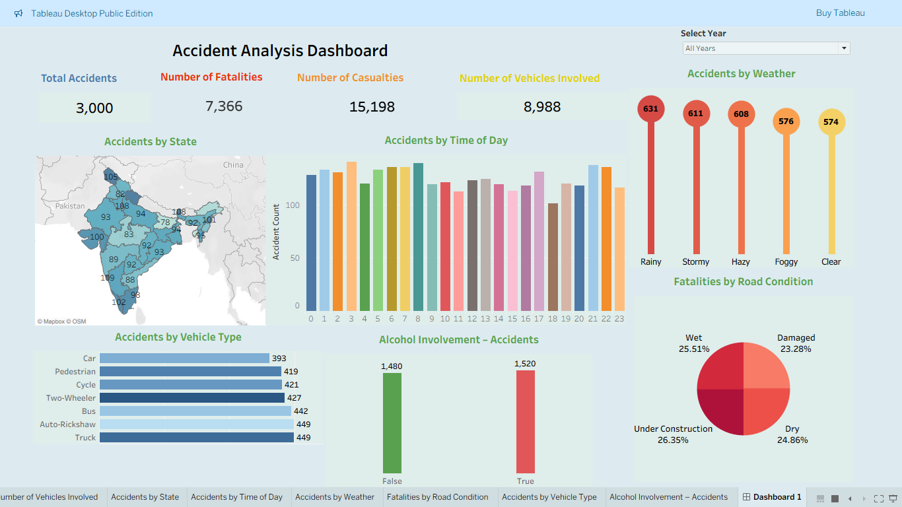

Tableau Data Analytics Project
This project analyzes road accident data using Tableau to identify patterns based on time, weather, vehicle type, and road conditions. The dashboard helps in understanding key risk factors and improving road safety decisions.
Access the complete source code and detailed documentation:

This dashboard provides a comprehensive analysis of road accident data using interactive visualizations. It highlights accident patterns based on time, weather conditions, vehicle types, and road conditions. The dashboard also identifies high-risk areas and key contributing factors such as alcohol involvement, helping in better decision-making for improving road safety.